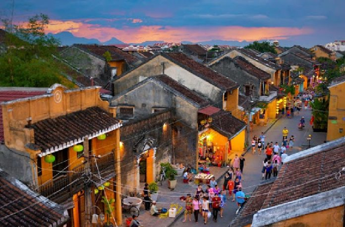
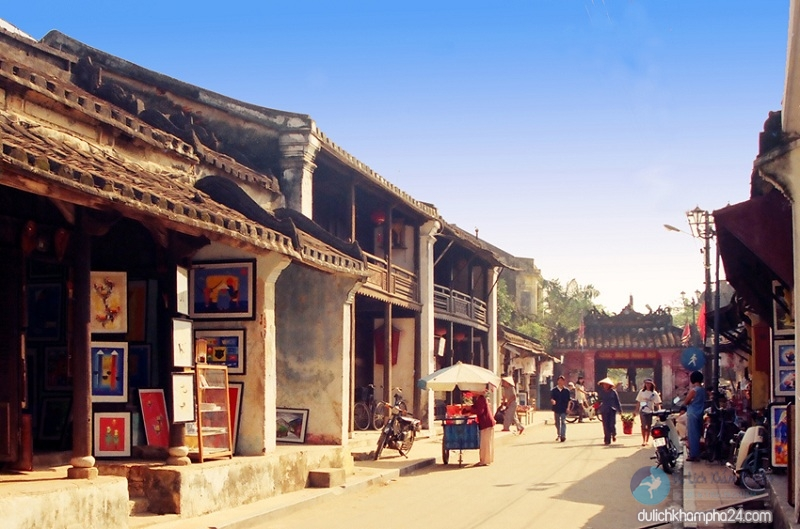
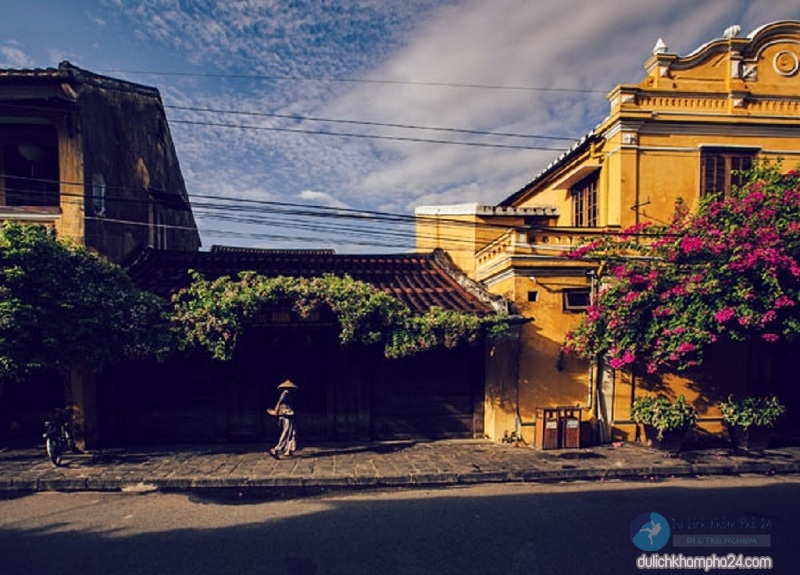
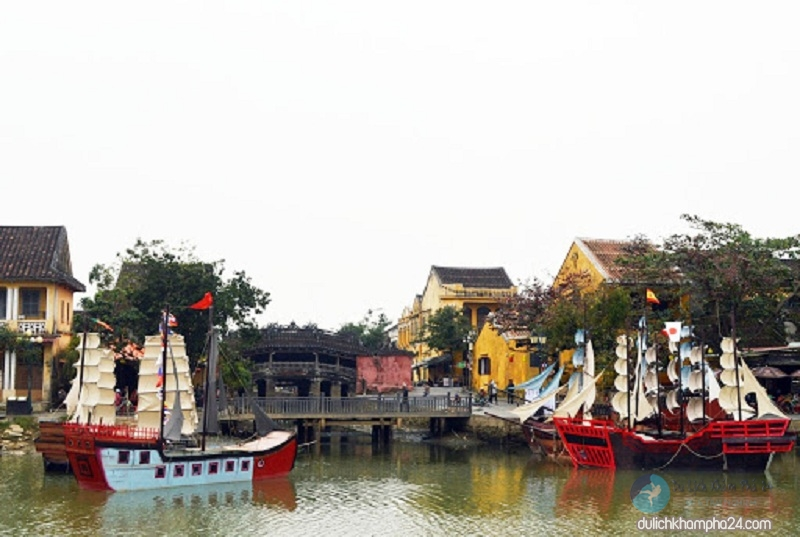
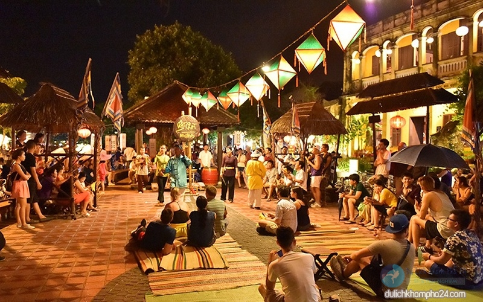

Giới thiệu về phố cổ Hội An di sản văn hóa nổi tiếng thế giới
Không sầm uất và cũng không phát triển như du lịch Đà Nẵng, Hội An mang một màu sắc hoàn toàn khác. Nơi mà cuộc sống cứ bình lặng và không gian cổ kính vẫn cứ như thế, mặc cho dòng chảy vô tình của thời gian cũng chẳng thể nào vùi lấp đi điều ấy. Những mái ngói phủ đầu rêu phong, những con đường ngập tràn sắc màu của đèn lòng, những công trình kiến trúc rồi đến các phong tập, tập quán,… dường như vận còn nguyên vẹn. Bài giới thiệu về phố cổ Hội An hôm nay sẽ cho bạn thấy rõ sức hấp dẫn, quyến rũ của đô thị cổ kính hơn 400 năm này.
Lịch sử hình thành Phố Cổ
Ra đời vào khoảng nửa cuối thế kỷ 16 – thời kỳ mà Việt Nam nằm dưới sự vị trì của nhà Lê. Năm 1527, Mạc Đăng Dung dành ngôi nhà Lê, vùng Đông Kinh lúc bấy giờ nằm dưới quyền cai quản của nhà Mạc. Tuy nhiên đến năm 1533, nhóm binh sĩ nhà Lê (do Nguyễn Kim) cầm đầu chống lại nhà Mạc. Sau khi Nguyễn Kim mất, con rẻ là Trịnh Kiểm nắm dành quyền và dòng họ Nguyễn Kim bị lấn át.
Phố cổ Hội An ra đời vào khoảng nửa cuối thể kỷ 16
Từ năm 1558, Nguyễn Hoàng cùng gia quyên và một số binh lính lùi về vùng Thuận Hóa. Đến sau năm 1570, ông tiếp tục nắm quyền trấn thủ tỉnh Quảng Nam. Sau đó cùng với con trai là Nguyễn Phúc Nguyên xây dựng thành thủy, mở rộng giao thương buôn bán với các nước phương Tây, Trung Quốc và Nhật Bản. Cũng bắt đầu từ đó, Hội An trở thành thương cảng quốc tế sầm uất bậc nhất khu vực Đông Nam Á giai đoạn thế kỷ 17, 18. Về tên gọi Hội An. Theo người phương Tây xưa kia gọi Hội An là Faifo, có nghĩa là đô thị/phố buôn bán có cảng. Nhưng đây chỉ là một cách gọi, không được coi là chính thức mà Hoài Phố mới là tên gọi chính trước tên Hội An được sử dụng.
Hội An trước kia còn được gọi là Hoài Phố.
Giới thiệu về phố cổ Hội An có gì đẹp và thu hút khách du lịch?
Phố cổ Hội An sở hữu nét đẹp cổ kính, nhẹ nhàng
Không quá phô trương, ồn ào, Hội An đơn giản và nhẹ nhàng hòa mình vào không khí phố thị với nhịp sống chậm rãi, khác hẳn với sự vội vã của những thành phố khác. Nếu đến thăm Hội An vào một buổi sáng sớm, du khách sẽ cảm nhận được tất cả. Nó thực sự rất yên tĩnh, rất phù hợp cho những ai đang cần không gian để nghỉ ngơi sau những tất bật của cuộc sống.
Một vẻ đẹp cổ kính, dịu dàng rất riêng của Hội An.
Nhờ những điều kiện thuận lợi về địa lý mà Hội An ngày càng trở nên thịnh vượng, tạo cho mình một nét đẹp không hề trùng lặp. 6 thế kỷ trôi qua, hình bóng của thương cảm sầm uất một thời giờ đây đã được thay thế bằng sự mộc mạc, giản dị hơn. Nó được thể hiện qua những công trình kiến trúc cổ, những ngôi nhà nhỏ xinh đơn sơ hay những con phố đèn lồng lãng mạn,…
Phố cổ Hội An – nơi giao lưu nhiều nền văn hóa.
Từng là một thương cảng đông đúc, sầm uất nhất tồn tại gần 200 năm. Kể từ khi triều Nguyễn cho phép mở cửa thông thương, nơi đây đã đón tiếp rất nhiều thuyền buôn từ khắp các miền của Việt Nam và Nhật Bản, Trung Quốc, Hà Lan, Ấn Độ,… Chính điều này đã tạo điều kiện để văn hóa các nước du nhập vào Hội An, tạo nên một Hội An đa sắc màu, đa văn hóa.
Hội An là nơi giao lưu của nhiều nền văn hóa khác nhau.
Văn hóa Hội An có sự giao thoa văn hóa các nước phương Đông gồm Trung Hoa, Nhật Bản và văn hóa Việt. Ngoài ra còn có sự giao thoa giữa các nền văn hóa cổ, được xem là một bức tranh thu nhỏ xã hội của 3 nền văn hóa cổ diện đó là văn hóa Champa, Sa Huỳnh và Đại Việt. Tuy vậy, nơi này vẫn giữ lại được cái hồn của dân tộc Việt.
Phố cổ Hội An – nơi có những lễ hội truyền thống đặc sắc
Dựa trên lịch sử từng là một thương cảng sầm uất, là nơi giao lưu văn hóa của nhiều quốc gia nên Hội An cũng những lễ hội thú vị và đặc sắc giao thoa nhiều tín ngưỡng, phong tục khác nhau. Điều này như tạo nên một nét chấm phá đặc sắc trong bản vẽ của bức tranh Phố Hội, được cả du khách trong và ngoài nước thích thú.
Đây cũng được xem là một nét đẹp của phố Hội.
Hiện tại du lịch Hội An có những lễ hội nổi tiếng như: lễ hội tưởng niệm các tổ sư ngành nghề, lễ hội kín ngưỡng thành hoàng làng, kỷ niệm các bậc thánh nhân, tôn giáo. Đặc biệt là ngày rằm 14, 15 Âm lịch hàng tháng. Cùng với đó là nhiều hoạt động dân gian như bài chòi, hò khoan, hò giã gạo,.. những trò chơi tưởng chừng đã bị lãng quên hàng chục năm về trước vẫn được tìm thấy ở đây.